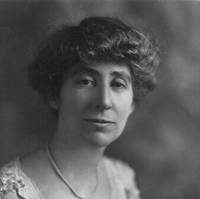
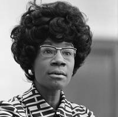

Loading data...Please do not scroll yet!
In this piece, we chose to focus only on the House of Representatives. While the Senate also has a number of women serving, the data available was not sufficient for our analysis. With that out of the way, scroll on to begin!
Let's start by introducing the visualization format. Each gray bar represents a particular president's term.
For example, this bar represents the government of Franklin D. Roosevelt.
Okay, now let's draw a line for each woman who has served in the House of Representatives. For example, this line is for the longest-serving woman representative, Democrat Marcy Kaptur, who represents Ohio's 9th District.
And here are all the other women representatives!
Let's dive in and look at a few prominent ones.
Jeannette Rankin

1917 → 1919
Montana's at-large
Republican Jeannette Rankin was the first woman to be elected to national office. She first rose to prominence as a campaigner for women's suffrage in Montana, and in 1916 won one of Montana's two "at-large" House seats. While she did lose the next election due to a change in the state's electoral rules, she returned to the House in 1941. A lifelong pacifist, Rankin voted against US engagment in both world wars. She is to date the only woman elected to Congress from Montana.

Patsy Mink

1965 → 1971
Hawaii's at-large
Patsy Matsu Takemoto Mink (竹本 まつ), a liberal Democrat from Hawaii, was the first woman of color to be elected to Congress. She had a long and distinguished career, serving 12 terms in the House of Representatives, as well as in numerous other posts. She was an early critic of the Vietman war and fought for various causes such as women's rights, labor unions and civil liberties. One of her greatest achievements was the passing of a bill to promote gender equality in education, to increase job opportunities for women and to remove gender stereotypes from school textbooks.

Shirley Chisholm

1969 → 1983
New York's 12th
Shirley Chisholm became, in 1968, the first African-American woman elected to the United States Congress, and in 1972, the first woman to run for the Democratic Party's presidential nomination. She famously said “I ran because somebody had to do it first” after earning a respectable 152 delegates at the national convention. While in Congress, she was an unabashed supporter of her constituents in Brooklyn, NY, championing daycare funding, minimum wages and gender equality.
Over the past 100 years, we've seen some progress in the House of Representatives. Since 1917, the House of Representatives has been graced by the presence of 288 women, while presently, 89 women currently serve, making
up 20% of representatives. Hover/tap on the lines and toggle the zoom slider to zoom in and explore.
When you're ready, scroll on to discover how close we are to a 50:50 House of Representatives!
89 women representatives is significant, but we still haven't hit 50:50 yet. In fact, for every woman currently serving in the House of Representatives, there are 3.9 men. Hover/tap on the graph to see the ratio of men to women
for each presidential term.
Democratic Party
The situation is also very party dependent. In 2018, 33% of Democratic House Reps are women. In the 2016 presidential election, women also voted for Democrat Hillary Clinton by a majority of 12 points.Republican Party
On the other hand, only 10% of Republicans in the House are currently women.All Representatives
Both parties need to do a better job of attracting women to the job. Overall, 20% of House reps. are women. So how does this compare to other developed countries? Is the US particularly progressive? Let's take a look!Representation in other developed countries
Visualized here is the % of women elected to the equivalent of the House of Representatives in other developed countries (in the OECD). In Norway, this is the Stortinget, in Mexico, Cámara de Diputados, for the United Kingdom, it is the House of Commons.
The Nordic countries lead the OECD in equal gender representation although Mexico has also made great strides recently. Many of these countries have also implemented gender quotas to improve representation (although Iceland, notably, has not).
The US, on the other hand, is quite regressive and ranks 28th out of 34 in the OECD. Notice also that none of these countries have made it to equal gender representation yet. In fact, the only two countries in the world to meet or exceed this threshold are Bolivia and Rwanda, both of which also have gender quotas.
Gender in congressional speeches
At this point, you may be thinking - great, I've seen how much progress we've made. I've been introduced to a few important women. And I know how much further the country has to go. But why? What does a 50:50 Congress give us that we don't have already?
Here's what we can do to answer this question:
- Gather a bunch of speeches made by representatives.
- Make a machine learning model that can identify the topics within a speech automatically because we're lazy.
- Tally up all the times a representative spoke about a particular topic.
- Compare the difference in time spent by each gender.
- Identify which topics have a bias towards one gender or another.
We scraped and cleaned 1Cleaning the text is a common step in natural language processing. It involves removing all words that convey no meaning or that might be misleading, converting words to their root form (eg. learning, learnt → learn) and combining words that appear together often into a single word (eg. “nuclear power” → “nuclear_power”) a corpus of 500,000 speeches delivered by men and women in the House of Representatives between 1994 and the present day from the Congressional Record. This included long monologues, debates, single sentence replies and acknowledgements praising particular individuals (of which there were many!).
We then used a probabilistic machine learning model called Latent Dirichlet Allocation (LDA) to help us infer the topics within a speech. 2While there are a number of different machine learning techniques that can do this, including neural networks, the beauty of LDA is that it is an unsupervised learning algorithm - ie. unlike most other algorithms, it does not require a bunch of pre-labelled speeches to train it. This was important to us because we didn't want to bias the inference process by selecting the topics in advance. The only necessary inputs are the corpus of speeches and a rough guess of the total number of topics within the corpus. LDA then iteratively tries to identify this number of topics by looking for words that often appear together and clustering them into the same topic. 3For example, if we choose a small number of topics - let's say 10 - it will simply identify the 10 most overarching themes in congressional speeches. Since we wanted to identify more subtle topics and themes, after a bit of experimentation, we settled on 75. As is often the case with LDA models, many of the topics identified were nonsensical, but the majority were well-defined.
After leaving the model to compute for a few hours, it returned with a bunch of topics such as heathcare, energy policy, war & foreign policy, national security, and so on.
4Of course, LDA doesn't output these names. It simply gives us a list of words and phrases that are most closely associated with a particular topic and it is up to us to name the topic.
Let's say we had two topics:
We label Topic 1 as “energy policy” and Topic 2 as “natural disasters”.
Let's say we had two topics:
| Topic 1 | Topic 2 |
|---|---|
| energy | disaster |
| oil | hurricane |
| natural gas | fema |
| coal | emergency |
| electricity | hurricane katrina |
| renewable energy | natural disaster |
| pipeline | orleans |
| global warming | earthquake |
We then ran the model on each of the 500,000 speeches to identify the topics within them. Due to the inherent uncertainty in probabilistic modelling, there will be some misidentification5For example, if we input the sentence “Wind and solar power are renewable energy sources while natural gas is a fossil fuel.”, the model tells us that is 84% about the “energy policy” topic whereas “There is a lot of natural gas in the middle east.” is only 46% about “energy policy”. Speeches can also be composed of multiple topics. . However, these errors should not affect our analysis as longer speeches are labelled more accurately and also have a greater contribution to the final result.
We then tallied up the time spent by each rep. on each topic and normalised it to give us a fractional time.
Okay, enough with the delays already! Let's look at the results. Scroll on!
Here is the topic “energy policy” visualized. Each dot in this chart represents a particular House rep., with men on the left and women on the right. The higher the dot, the greater the proportion of their time in the House was spent talking about energy policy.
Hover/tap on a dot to see discover who it is and how long they spent on energy policy. You can also use the search bar to find your own rep. by entering either your district (eg. California 12) or their name (Nancy Pelosi).
We can represent the difference between the median time spent by each gender with a line.
Male and female reps. appear to spend roughly equal amounts of their time on energy policy. Next, let’s take a look at another topic, one which women tend to devote more speaking time to.
So here's the topic “healthcare”. This is a significant topic for both genders but women reps. still spent more than twice as much time discussing healthcare and medicine than men did.
That's quite a startling discovery. Since Democrats spend more time talking about healthcare than Repulicans, and Democratic women far outnumber Republican women, while the opposite is true for Republican men, you might think that this accounts for the difference between the genders. However, if you take each party independently, the result is almost exactly the same which means that the bias is almost exclusively down to gender. 1You can see a breakdown by party in this violin plot.
Now let's look at a topic favoured by men.
Here's the topic “government budget”. This time, we see that men spent more time talking about the budget and taxes than women did. However the gender difference isn't as extreme. The majority of our topics seemed to be either biased towards women or neutral.
Let's take the median difference line for this topic and plot it with lines representing all the other topics.
How to read this chart
A difference of +100% (eg. “child welfare”) means that women spend twice as much time as men talking about the topic. A difference of -100% means that men spend twice as much time as women talking about the topic.
So female representatives spend more of their time than men time talking about healthcare, civil rights, labor rights and the environment...
...and male representatives spend more of their time than women talking about the military, agriculture and the budget.
Tap on a line to take a closer look at a topic
The Future
In the upcoming House elections, a record number of women have filed to run.